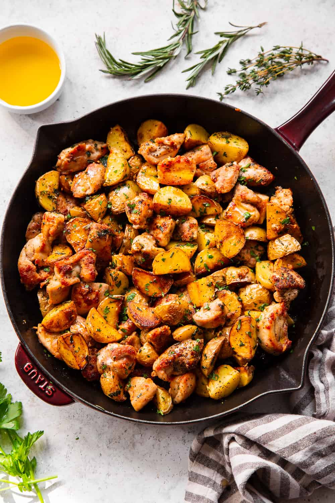

My Favorite Recipe
Garlic Butter Chicken and Potato Skillet

Ingredients
- golden potatoes
- ghee
- garlic
- rosemary leaves
- thyme leaves
- parsley
- boneless chicken thighs
- sea salt and black pepper
- garlic powder
- smoked paprika
Instructions
- To soften the potatoes before cooking on the stovetop, place them in a microwave safe bowl with about 1/4 cup of water and microwave on high for 5-6 minutes or until barely fork tender.
- Heat a large heavy skillet over medium high heat and add 2 tablespoons of the ghee.
- Once hot, add the potatoes and sprinkle all over with sea salt and pepper. Cook about 2 minutes, stir, then cook another 4 minutes, stirring occasionally to evenly brown, until golden brown and tender.
- During the last minute of cooking the potatoes, push them to the size and add the garlic, rosemary, thyme and parsley.
- Stir in with the potatoes and cook until potatoes are done. Once done, remove the potatoes, garlic and herbs to a bowl and set aside.
- Season the chicken with salt and pepper, garlic powder, onion powder and smoked paprika, then add to the skillet.
- Cook over med-high to high heat undisturbed for about 3 minutes or until crisp and brown on one side, then stir and continue to cook until crisp and golden brown all over, about 4-5 minutes.
- Toss the chicken with the potatoes and top with additional fresh herbs before serving.